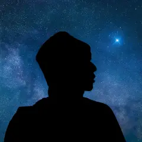

PHYSICS IS STRONGER THAN ANY FAITH.
像“杵”一样，严谨治学。
为往圣继绝学
为中华之崛起而读书
互动实验室
选择一个实验，亲手调整参数，观察物理现象。
学习资料库
根据文件名搜索并下载 PDF；新增资料只需上传文件。
注意
此版本为内测版本，仅由王老师物理课内部人员使用，由未授权传播引发的任何不良影响，王老师概不负责。
此版本为内测版本，仅由王老师物理课内部人员使用，由未授权传播引发的任何不良影响，王老师概不负责。

GRAVITY STUDIO
为往圣继绝学
为中华之崛起而读书
选择一个实验，亲手调整参数，观察物理现象。
根据文件名搜索并下载 PDF；新增资料只需上传文件。